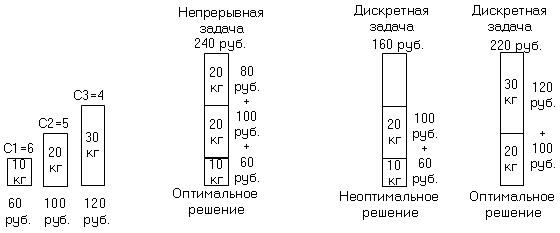
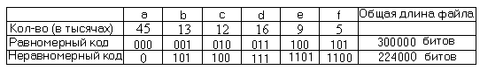
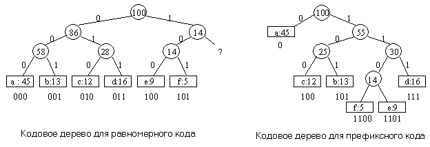
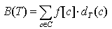
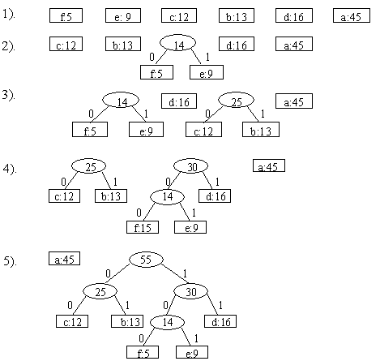
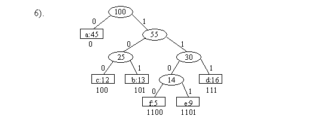
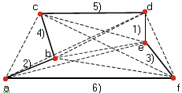

|
|
|
|
|
Для многих оптимизационных задач есть более простые и быстрые алгоритмы, чем динамическое программирование. К таким алгоритмам относятся жадные алгоритмы. Жадный алгоритм на каждом шаге делает локально оптимальный выбор в расчете на то, что итоговое решение также будет оптимальным. Это не всегда оправдано, но для многих задач жадные алгоритмы действительно дают оптимум. Принцип жадного выбораГоворят, что к оптимизационной задаче применим принцип жадного выбора (greedy choice property), если последовательность локально оптимальных (жадных) выборов дает глобально оптимальное решение. Различие между жадными алгоритмами и динамическим программированием можно пояснить так: на каждом шаге жадный алгоритм берет “самый жирный кусок”, а потом уже пытается сделать наилучший выбор среди оставшихся вариантов, каковы бы они ни были. Алгоритм динамического программирования принимает решение, просчитав заранее последствие всех вариантов. Оптимальность для подзадачРешаемые с помощью жадных алгоритмов задачи обладают свойством оптимальности для подзадач: оптимальное решение всей задачи содержит оптимальное решение подзадач. И жадные алгоритмы, и динамическое программирование основываются на свойстве оптимальности для подзадач, поэтому может возникнуть желание применить жадный алгоритм вместо динамического, и наоборот. В одном случае это может не дать оптимального решения, во втором может привести к менее эффективному решению. Примером может служить задача о рюкзаке[3]: она состоит в том, чтобы уложить в рюкзак вещи таким образом, чтобы их суммарный вес не превышал предельного значения W и суммарная стоимость вещей была максимальна. Задача имеет две разновидности – непрерывная задача и дискретная. Например, вещи неделимы (золотой слиток) и делимы (золотой песок). Пусть имеется n вещей, каждая из которых имеет стоимость vi и вес wi. Стратегия жадного алгоритма состоит в следующем: рассчитывается удельная цена вещи ci = vi /wi. Вещи сортируются в порядке убывания удельной цены. Первой выбирается вещь с максимальной удельной ценой, затем из оставшегося множества снова выбирается вещь с максимальной ценой и т.д. При этом условием выбора является то, что добавляемая вещь не приводит к превышению предельного веса W. В случае непрерывной задачи о рюкзаке получается общее оптимальное решение, в случае дискретной – нет.
 Коды ХаффменаЛюбое сообщение состоит из последовательности символов некоторого алфавита. Как известно, при передаче сообщений, при компьютерной обработке символы алфавита кодируются. Всем известна кодировка символов ASCII. Зачастую для экономии памяти, для увеличения скорости её передачи возникает задача сжатия информации . В этом случае используются специальные методы кодирования символов. К таким относятся коды Хэффмена, которые дают сжатие от 20% до 90% в зависимости от типа информации [3]. Алгоритм Хэффмена находит оптимальные коды символов исходя из частоты использования символов в сжимаемом тексте. Алгоритм Хэффмена является примером жадного алгоритма . Пусть в файле длины 100000 символы известны частоты символов:  Нужно построить двоичный код, в котором каждый символ представляется в виде конечной последовательности битов, называемой кодовым словом. При использовании равномерного кода, в котором все кодовые слова имеют одинаковую длину, на каждый символ тратится минимум три бита и на весь файл уйдет 300000 битов. Неравномерный
код будет экономнее, если часто
встречающиеся символы закодировать
короткими последовательностями битов,
а редко встречающиеся символы –
длинными. При кодировке на весь файл
уйдет (45
Префиксные кодыРассмотрим коды, в которых для каждой из двух последовательностей битов, представляющих различные символы, ни одна не является префиксом другой. Такие коды называются префиксными кодами . При кодировании каждый символ заменяется на свой код. Например, строка abc выглядит как 0101100. Для префиксного кода декодирование однозначно и выполняется слева направо. Первый символ текста, закодированного префиксным кодом, определяется однозначно, так как его кодовое слово не может быть началом какого-либо другого символа. Определив этот символ и отбросив его кодовое слово, повторяем процесс для оставшихся битов и так далее. Например, строка 001011101 декодируется как aabe. Для эффективной реализации декодирования нужно хранить информацию о коде в удобной форме. Одна из возможностей – представить код в виде кодового двоичного дерева, листья которого соответствуют кодируемым символам. При этом путь от корня до кодируемого символа определяет кодирующую последовательность битов: переход по дереву налево дает 0, а переход направо – 1. 
Во внутренних узлах указана сумма частот для листьев соответствующего поддерева. Оптимальному для данного файла коду всегда соответствует двоичное дерево, в котором всякая вершина , не являющаяся листом, имеет двух сыновей. Равномерный код не является оптимальным, так как в соответствующем ему дереве есть вершина с одним сыном. Ни один код не начинается с 11… Такое свойство оптимального кода позволяет легко доказать, что дерево оптимального префиксного кода для файла, в котором используются все символы из некоторого множества С и только они содержат ровно | С | листьев по одному на каждый символ и ровно | С | - 1 узлов , не являющихся листьями. Зная дерево Т, соответствующее префиксному коду, легко найти количество битов, необходимое для кодирования файла. Именно, для каждого символа с из алфавита С, пусть f [c] означает число его вхождений в файл, а dT (c) – глубину соответствующего ему листа и, следовательно, длину последовательности битов, кодирующей с. Тогда для кодирования файла потребуется:  Эта величина называется стоимостью дерева Т. Необходимо минимизировать эту величину. Хаффмен предложил жадный алгоритм, который строит оптимальный префиксный код. Алгоритм строит дерево Т, соответствующее оптимальному коду снизу вверх, начиная с множества из | С | листьев и делая | С | - 1 слияний. Для каждого символа задана его частота f [c]. Для нахождения двух объектов для слияния используется очередь с приоритетами Q, использующая частоты f в качестве приоритетов – сливаются два объекта с наименьшими частотами. В результате слияния получается новый объект (внутренняя вершина), частота которого считается равной сумме частот двух сливаемых объектов. Эта вершина заносится в очередь.
1.
n ←│C│
2.
Q ← C
3. for i ← 1 to n-1
4.
do z ← Create_Node ( ) 5. x ← left [z] ← Dequeue (Q) 6. y ← right [z] ← Dequeue (Q) 7. f[z] ← f[x] + f[y] 8. Enqueue (Q, z)
9.
return Dequeue (Q)
Иллюстрация построения кодового дерева :   На каждом шаге сливаются два поддерева с наименьшими частотами.
Жадные алгоритмы, как эвристикиСуществуют задачи, для которых ни один из известных жадных алгоритмов не позволяет получить оптимального решения. Там не менее имеются жадные алгоритмы, которые с большой вероятностью позволяют получить "хорошее" решение, то есть почти оптимальное решение, характеризующееся стоимостью, которое лишь не несколько процентов превышает оптимальную. В таких случаях “жадный” алгоритм оказывается самым быстрым способом получить “хорошее” решение. Рассмотрим задачу "коммивояжера" [1]. Для получения оптимального решения подходит лишь алгоритм исчерпывающего поиска, время выполнения которого экспоненциально. Задачу коммивояжера можно решить, используя эвристические решения. Эвристика - это основанные на здравом смысле правила, вытекающие из опыта, а не из строго доказанных математических положений Задача коммивояжера сводится к поиску в неориентированном графе с весовыми значениями ребер маршрута, у которого сумма весов составляющих ребер будет минимальной. Такой маршрут называется гамильтоновым циклом. Пусть дан граф с шестью вершинами ("городами"). Для каждой вершины заданы координаты, весом ребра считается его длина. Предполагаем, что существуют все ребра, то есть граф является полным. В более общем случае, когда вес ребер не оценивается евклидовым расстоянием, вес ребра может быть равен бесконечности.
Можно проложить разные маршруты:
Жадный алгоритм задачи коммивояжера выбирает на каждом шаге ребро с минимальным весом, такое чтобы оно не образовало цикла с ранее выбранными ребрами, и не порождало вершины со степенью 3 и более, что неприемлемо для маршрута. Цикл допустим, только если количество ребер соответствует количеству вершин, то есть мы приходим к исходной вершине маршрута. 
На рисунке сначала выбирается ребро (d, e) с минимальным весом 3. Затем рассматриваются ребра (b, c), (a, b) и (e, f) с весом 5. Все эти ребра удовлетворяют условиям выбора и можно выбрать любое из них в любом порядке (наприме, (a, b), (e, f), (b, c)). Все эти ребра включаются в решение. Следующим кратчайшим путем является (a, c) с длиной (7, 08), но это ребро образует цикл с ребрами (a, b) и (а, с), и поэтому отвергается. Затем по той же причине отвергается ребро (d, f). Далее ребро (b, e) отвергается, так как иначе вершины b и e будут иметь степень 3. По этой же причине будет отвергнуто следующее ребро (b, d). Затем рассмотрим ребро (c, d) и добавим его к гамильтонову циклу. Количество ребер соответствует количеству вершин – 1 и построен маршрут: a→b→c→d→e→f. Для завершения добавляем ребро (a, f) для замыкания цикла. По оптимальности маршрут на четвертом месте среди возможных маршрутов. Его стоимость на 4% больше стоимости оптимального маршрута.
|
|
|